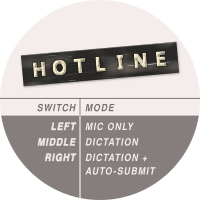

Hotline dial card
The label for the centre of the rotary dial: the logo at the top, and the toggle modes at the bottom. Open this page in Chrome, because Chrome draws the SVG filters that give the tape its texture.
- Measure the centre of your dial, and set the diameter below.
- Press Print.
- In the Chrome print preview, click Print using system dialog at the bottom of the panel (or press ⌥⌘P).
- In the macOS print dialogue, set Scale to 100 % (not "fit to page").
- Under Media & Quality (or Quality), set the quality to Best.
- Print, then cut along the dashed line.
Use the macOS dialogue: the Chrome dialogue has no quality setting, and at normal quality some printers add faint green lines to the grey.
